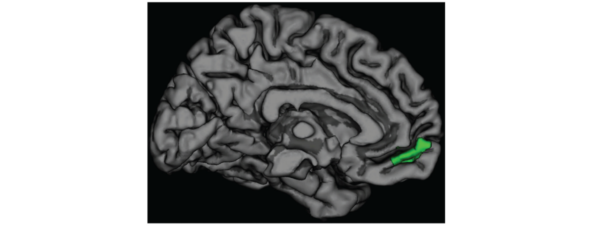
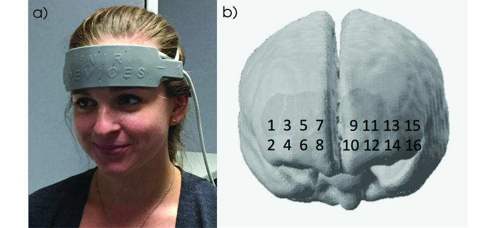

The study of persuasion has a very long history - one of the longest in the formal discipline of social psychology (and if we consider rhetoric to be a practice in persuasion… the ancient Greeks have plenty of lessons to pass on). Yet, investigation of the brain’s role in persuasion is very new. It is only in the last decade that researchers have made a concerted effort to explore the neural mechanisms of persuasion and what leads people to change their behavior.
In the SCN lab at UCLA (before my time), Emily Falk and colleagues forged new ground in this young domain when they identified an area in the front of the brain called the medial prefrontal cortex (mPFC) that provides a signal of persuasion processes - the stronger it activates in response to persuasive messages, the more likely a person is to change their behavior in accordance with that message. Since then, this effect has been replicated and extended several times and is (IMO) one of the more reliable neural signatures of behavior within the domain of social neuroscience. Persuasion-related mPFC activity is predictive even when controlling for self-reported intentions to follow a message, and can predict population-level behaviors like the success of anti-smoking campaigns.
 Figure from Falk et al. (2012) in Psychol Sci - The green highlighted area denotes the mPFC, where activity levels predict persuasion.
When I first arrived at UCLA as a first year grad student, the lab was further investigating the practical and theoretical implications of this like of work. I was lucky to benefit from this robust groundwork and get my first publications doing this research. Specifically, we have been investigating the practical applicability and universality of the mPFC’s predictive power, as well as expanding theory about why it works this way.
Persuasion Outside the Lab
Research into the mPFC’s role in persuasion has typically been done using fMRI - a method of neuroimaging that gives a detailed picture of the brain, but which is also very expensive to acquire and use. Given the mPFC’s utility as a predictor of behavior change in response to persuasive messages, one might hope to use that predictive capacity in real world situations, such as developing public health campaigns. However, using fMRI for such applications is impractical - when a municipality needs to figure out which tv ad is most effective for their new recycling initiative, they probably won’t have a spare $100k sitting around for an fMRI study. Additionally, there are many places in the world where an fMRI machine is not available for even academic use. So my PI Matt Lieberman wanted to see if these findings would replicate in a different methodology, called near infrared spectroscopy (fNIRS). This is a more portable, affordable, and user-friendly neuroimaging technology that would be more accessible as a tool for applied persuasion neuroscience, if it worked.
 The headband-style fNIRS device we used for our replication study, and the corresponding areas on the prefrontal cortex it could record from.
I was actually accepted to the SCN lab specifically because I had fNIRS experience from my undergrad lab at Pomona College (shout out to Prof. Lewis for making me research-ready). So the first thing I worked on upon arriving was replicating a previous fMRI persuasion study from our lab, but this time with fNIRS. We showed participants messages about the importance of wearing sunscreen while their brain activity was recorded, and then asked them a week later how much they had used sunscreen since the study. Just like in the fMRI studies, we were able to predict people’s sunscreen usage from their neural activity. Replication = success!
Persuasion in Diverse Populations
Besides feasibility issues, research on brain predictors of persuasion has also been limited by a lack of study sample diversity. Nearly all persuasion neuroscience research has been done with WEIRD participants - people from Western, educated, industrialized, rich, and democratic backgrounds. But WEIRD people are a small minority of the world population, so we need to expand who is included in neuroscience research if we want to make claims about all human brains. In another study published in the Journal for Personality & Social Psychology, I lead a collaboration between our lab and the political research firm IIACSS in Amman, Jordan to test whether persuasion could likewise be predicted from brain activity in Arab-speaking Jordanians, not just Americans. This project involved I and another grad student traveling with our fNIRS equipment to Amman for a whirlwind week of nonstop data-collection. Here again, mPFC activity while viewing anti-smoking, anti-violence, and family planning ads predicted participants’ ratings of how persuasive those ads were. Aggregating across the participant sample, we could even predict which ads were the most effective with up to 96% accuracy. Again, this replication gives us more confidence in using the brain to predict behavior change in real people.
 During data collection in Amman
During data collection in Amman
**
Finally, our team is currently working on a novel theoretical contribution to understanding why the mPFC acts as an indicator of persuasion. Other social neuroscience research names this area as integral for social cognition and
References:
- Falk, E.B., Berkman, E.T., Mann, T., Harrison, B., & Lieberman, M.D. (2010). Predicting persuasion-induced behavior change from the brain. The Journal of Neuroscience, 30(25), 8421-8424
- Falk, E.B., Berkman, E.T., & Lieberman, M.D. (2012). From neural responses to population behavior: Neural focus group predicts population-level media effects. Psychological Science, 23(5), 439-445
- Riddle, P.J. Jr., Newman-Norlund, R.D., Baer, J., & Thrasher, J.F. (2016). Neural response to pictorial health warning labels can predict smoking behavioral change. Social Cognitive and Affective Neuroscience, 11(11), 1802-1811